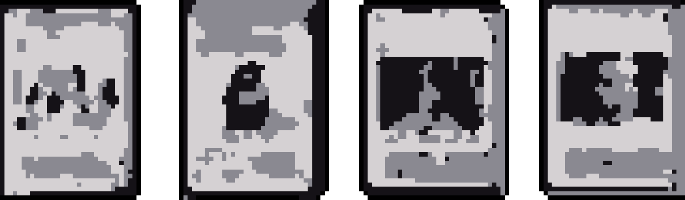

Transmedia storytelling is the idea of telling a single narrative story across a range of platforms, expanding or adding to the original media. This isn't necessarily a new or exclusively 'technological' idea; rather, it predates the internet considerably.
Simon Pont notes in his book 'Digital State: How the Internet is Changing Everything', that transmedia experiences allow for a much richer narrative story; it allows writers to work with parallel and non-linear timelines (Logan, for example) arguing that back-story has become more-story.
One of the most notable examples of an expansive transmedia experience is that of Star Wars. In April 1977, a group of executives from Fox Pictures gathered together to watch a screening of an upcoming film, "Star Wars" from director George Lucas. The reaction was apparently muted; several Fox directors believing that the concept would not catch-on with mainstream audiences, as Dave Pollock noted in his biographical book The Life and Films of George Lucas.
One of the best examples of that is the now-defunct Star Wars Collectible Card Game (or CCG.) The game was produced from December 1995 until December 2001. It was a best-seller in the late 90's - rivalling the likes of Magic the Gathering according to InQuest magazine. However, come 2001, the game was cancelled due to a licensing dispute. Devastated fans undeterred banded together and revived the game - illegally.

These fans were known as the Players' Committee. They continue to this day, distributing new self-designed content for the game and organising events. Jonathan Rey Lee notes as part of the Star Wars and the History of Transmedia Storytelling book, that *digital* was an essential part of the game's longevity, allowing a management structure for the game.
A more recent example would be the ABC television series Castle. The show featured author-turned-crimefighter Richard Castle. ABC built upon this, publishing a series of non-canonical crime-fiction books 'written' by Richard Castle, often the same books the character spoke about in the television series. Despite Castle's 2016 cancellation, Richard Castle (or rather ghost writer Tom Straw) continues to publish books that top the New York Times Bestsellers list on release.
Ultimately, this experience existed with the intent to fully immerse a viewer into the universe, so they would be more inclined to buy merchandise and continue viewing the show. Whilst it was a blatant marketing ploy, it was also a stroke of genius and elevated the show and its world into something living and breathing.
Another way of creating a transmedia experience is to expand your narrative or universe onto social media, much like how Castle created a fake Twitter profile for the titular character. Norwegian show, SKAM, took this concept and kicked it up a gear.
Skam features a unique narrative structure, episodes are released in 5-15 minute clips in real time; if a clip features a character having breakfast, it would be released at breakfast time for many Norwegians.
All of the characters in the teen-situational-drama have social media profiles; these profiles don't just compliment the show narrative - but expand on it. Unique text message conversations and Instagram content that wasn't featured in the show provide a true Transmedia narrative expansion.
As the New Statesmen put it, Skam might just be "the most popular programme you've never heard of." In fact, Håkon Sørensen, a Norwegian television analyst, found in a survey that 98% of Norwegian Youth (15-19) were aware of the shows existence - rivalling the likes of international series like Game of Thrones and House of Cards.
Since the show was so contingent on speculation and discussion, viewing Skam could never truly be a solo or a passive viewing experience. Fans were desperate to know what happened next to these characters, trying to decipher Instagram or Text Messages for clues. With the language barrier, it only increased fan engagement. Some international fans even went as far as learning Norwegian according to the New Statesmen.
As one fan put it, these characters "feel like friends" which is largely due to the 24-7 nature of following and viewing the show. You see them experience events from beginning to end and the various repercussions and drama that followed.
These examples are illustrative of how key Transmedia is to keeping an engaged network of fans - even long after your content's expiration date. For a show like Castle, the spin-off book series has almost transcended the show in popularity and became a best-selling stand-alone entity. Transmedia may ultimately exist to sell more merchandise or to hook and reel viewers in but it also exists on a wholesome note, providing fans with more of their favourite universes and enhancing their escapism to new levels.